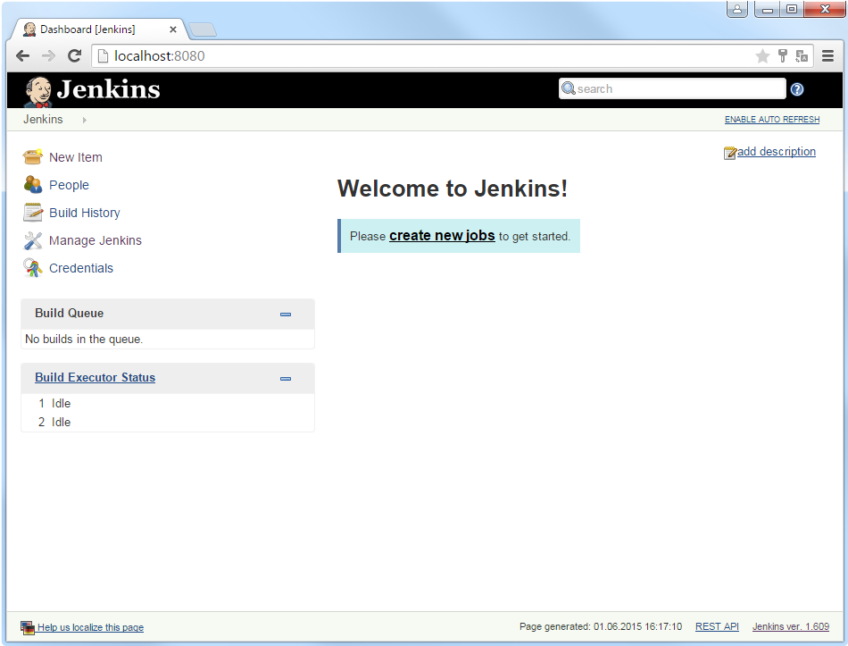
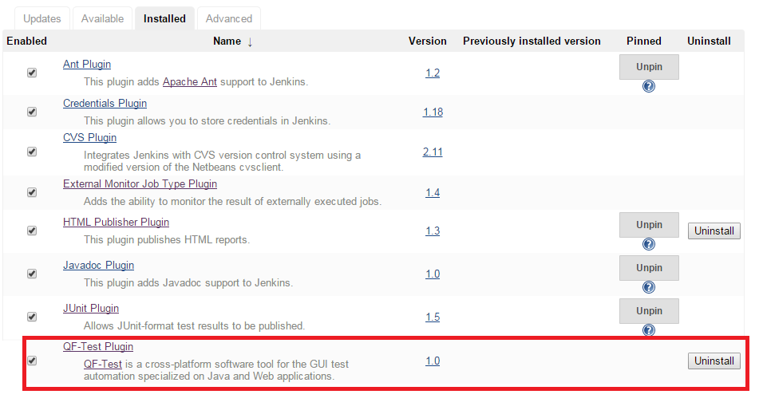

| Version 6.0.3 |
 The video
'QF-Test Jenkins Plugin'
shows installation and configuration of the plugin.
The video
'QF-Test Jenkins Plugin'
shows installation and configuration of the plugin.
Jenkins/Hudson (http://jenkins-ci.org) are continuous integration build tools. They are meant to control and monitor the build process within a software project. One important step in this build process is automated testing.
There are number of benefits to be gained when integrating QF-Test with Jenkins/Hudson:
As Jenkins and Hudson share a common history, following sections will use Jenkins as representative.
Note For GUI tests, Jenkins must not be configured to run as a service but
within a real user session. On Windows the .msi installer unfortunately
directly installs Jenkins as service without any further inquiry. Please beware of it
therefore and ensure Jenkins is started as real user process as described below.
To install Jenkins download the war Archive (which can be found
here)
and start it via java -jar jenkins.war.
As soon as Jenkins is started its web interface can be accessed via
http://localhost:8080. It should look like the
following:
|
|  | ||
|
| Figure 26.4: Jenkins after start-up. | ||
GUI testing requires an unlocked, active desktop. That is the only way to ensure that the SUT behaves the same as if a normal user interacts with it. Chapter Hints on setting up test-systems contains useful tips and tricks to set-up the Jenkins/Hudson process.
Jenkins allows execution of tasks on remote machines. This is of course also relevant for GUI testing. Due to its nature GUI tests are typically not intended to run on the central build server. In addition, tests might need to be executed for different environments, operating systems and SUT versions.
On a remote machine, a Jenkins agent needs to be launched in order to connect to the Jenkins server and wait for jobs to be processed. As described in the Jenkins documentation, there are several options to launch this agent, but for the GUI tests to properly work the only possible launch method is to use Java Web Start.
For GUI tests it is vital to have an active, unlocked user session. Therefore it is not possible to start the agent via a windows service but a real (test) user must be logged in (e.g. via auto login) using Windows Autostart to launch the Jenkins agent. Furthermore screen locking needs to be disabled.
NotePlease see also FAQ 14 for more technical background details.
The QF-Test Plugin enables QF-Test to interact with Jenkins. To install the plugin open the Jenkins dashboard and navigate via "Manage Jenkins" to "Manage Plugins". Select the QF-Test Plugin from the "Available" tab. When installing the QF-Test Plugin the JUNIT and HTML-Publisher Plugin will also be downloaded automatically, in case they were not already installed. Finally restart Jenkins to complete the installation. Now the QF-Test Plugin will show up under the Installed tab, as shown in Figure 20.2.
NoteJenkins will automatically use the latest installed version of QF-Test. In case you want to use a different version, you can provide its path under the QF-Test section in the Jenkins configuration (Manage Jenkins -> Configure System).
|
|  | ||
|
| Figure 26.5: Install QF-Test Plugin. | ||
As soon as the QF-Test Plugin has been installed successfully, test execution with QF-Test can be included in the build jobs. A detailed explanation about the configuration of jobs can be found in the QF-Test Plugin documentation at https://www.qfs.de/en/jenkins.
| Last update: 9/6/2022 Copyright © 1999-2022 Quality First Software GmbH |